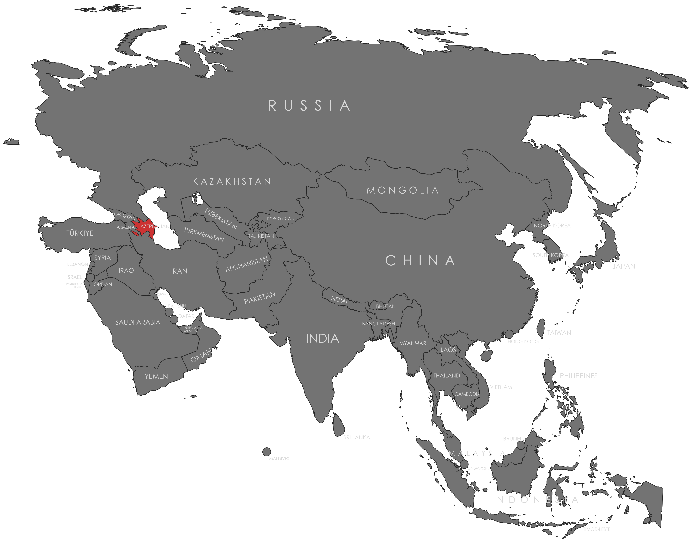

Specifications
- Local Name: Azərbaycan
- Proportion: 1:2
- Name of the Flag: Üçrəngli Bayraq (The Tricolour Flag)
- Adopted: February 5, 1991
Symbolism
- Blue: Turkic heritage and national identity
- Red: Progress, modernization, and development
- Green: Islam and the cultural traditions of the nation
- Crescent: Cultural and historical ties to the Islamic world
- Eight-pointed star: The eight branches of the Turkic peoples
Colors:
Shapes / Symbols:
Meaning / Special Display
- It is prominently displayed on National Flag Day every November 9, celebrating statehood and unity.
- The flag is often raised during cultural festivals and events reflecting national pride and modern progress.
Description
- The flag embodies Azerbaijan’s blend of Turkic identity, Islamic heritage, and modern national aspirations.
- Citizens view it as a symbol of independence, unity, and national resilience.

Return to Gallery